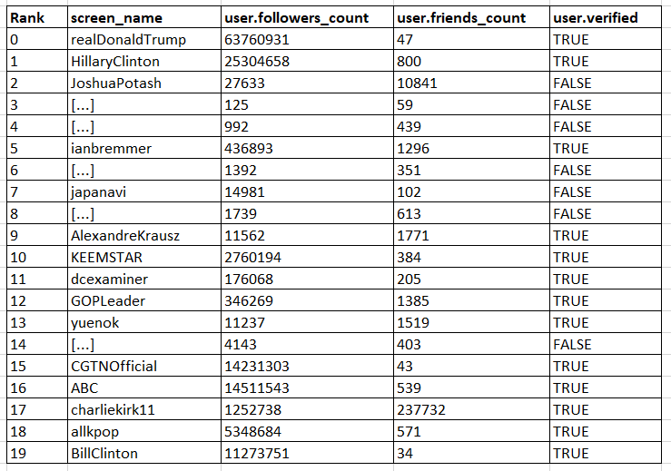

Identifying Critical nodes on Twitter
This is part 3 of a 3-part series on the study of critical nodes in a network.
Links to: part 1 and part 2
Goal:
Given a social network graph, like twitter, and an integer k, identify k nodes (user accounts) that when selected as the source will generate the maximum spread of (mis)information in the network.
Solution:
This is a direct implementation of the algorithm described in [1].
Experimental Setup:
We use the same graph that we used in the previous 2 cases. For this experiment, we set the value of
k to be 20. That is, we want to compute the 20 nodes that when tweet out (mis)information, the number of the nodes that will be influenced by that information is maximised.
The
C++ code for the version of the algorithm when the seed set is known is provided here.
This is the same link as the code for the part 2 experiment. For running this algorithm, set the
useSeedProvidedAsInput variable to be false and change the argument
budget to the number of nodes that you want to find.
(The below part is the same as the earlier 2 parts)
For the purpose of this experiment, tweets mentioning Hong Kong were filtered using the
Tweepy library written in Python and the
Twitter API. The
Python code for the streaming process can be found here. Tweets were collected from Tue Aug 13 21:30:14 +0000 2019 to Thu Aug 15 13:08:30 +0000 2019. In all, around 1.2 million tweets were collected.
A graph was created from the tweets. Graph was created in the following manner: there are 3 actions that any user can take from a tweet: retweet, retweet with comment, and reply. All 3 actions are perceived as engaging with the tweet. An edge was created from a user
v to a user
w if
w took any of the above stated 3 actions on
v's tweet. The graph created in this manner contained a total of 607525 nodes and 994220 edges. The
JAVA code for the parsing of the Tweet JSON object and the subsequent creation of the graph can be found here.
Results and Observations:
Below are the top 20 user accounts as selected by algorithm.

References:
[1]
Maximizing the Spread of Influence through a Social Network
[2]
Influence Maximization: Near-Optimal Time Complexity Meets Practical Efficiency
[3]
Disrupting diffusion: Critical nodes in network